4. Medieval Britain - Plantagenents (1154 AD to 1485 AD)
The conflict between the king and pope continued…it was the age of the crusades…
Christianity was central to the Plantagenet era, with the dynasty being deeply Roman Catholic and their rule shaped by both the Church's influence and conflicts with it. Key events included the power struggle between Henry II and Thomas Becket (a conflict over the supremacy of royal authority versus the independence of the Church - Henry sought to reassert royal power over the Church), the participation of kings in the Crusades, and the annulment of the Magna Carta by the Pope, all highlighting the Church's authority.
- Henry II 1154-1189
- Richard I (the lionheart) 1189-1199
- John 1199-1216
- Henry III 1216-1272
- Edward I 1272-1307
- Edward II 1307-1327
- Edward III 1327-1377
- Richard II 1377-1399
- Henry IV 1399-1413
- Henry V 1413-1422
- Henry VI 1422-1461
- Edward IV 1461-1483
- Edward V 1483-1483
- Richard III 1483-1485
(late) 12th Century AD: White Ladies Priory
White Ladies Priory (once the Priory of St Leonard at Brewood) was founded. It was a priory of Augustinian canonesses, the name 'White Ladies' refers to the canonesses who lived there and who wore white religious habits.

White Ladies Priory
Reference: English Heritage - White Ladies Priory
1154 AD (4th December): Pope Hadrian IV
Englishman Nicholas Breakspear becomes Pope Hadrian IV, Nicholas Breakspear was a reforming monk who spent nearly his entire career on the Continent. He was elected in 1154 and took the name Hadrian IV. He remains the only Englishman ever to become pope.
Church Building - Transitional (1160-1200)
The introduction of the pointed arch ushered in Gothic architecture and revolutionised church building, it was primarily for structural reasons as the arch was able to support more weight by putting more thrust to the ground and reduce the size of the supporting columns - in England this was seen about 1160-1200.
The term Transitional is used to denote the merging of one style with another, especially the 12th Century transition from Romanesque to Gothic.
St Mary, Bitterley is one of Shropshire's churches that dates from the Transitional period and St Michael, High Ercall, is another example.

St Mary, Bitterley

St Michael, High Ercall
Medieval Floor Tiles
Many Shropshire churches have medieval floor tiles, for example Hughley.
Reference: Churches Conservation Trust - Tiles Through Times
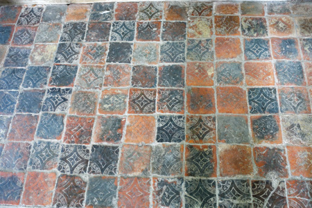
St John the Baptist, Hughley - Floor Tiles
1167: Cardington Templar
Cardington village, including its church, was given in 1167 to the Knights Templar, and remained in their possession until 1308. They were responsible for starting the building of the present church in the later part of the 12th century.
1170 AD (29th December): Thomas Becket
Thomas Becket (Archbishop of Canterbury) is murdered after ongoing quarrels with King Henry II.
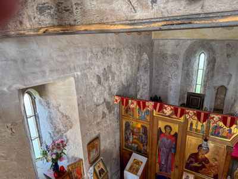
St John, Shrewsbury - Wall Painting depicting the murder of Thomas Becket
Third Crusade
The Third Crusade (1189–1192): Led by Richard I (Richard the Lionheart), this was the largest English effort and one of the main campaigns against Saladin after the fall of Jerusalem. While it failed to recapture the city, it resulted in a truce allowing Christian pilgrims access to Jerusalem and was successful in capturing cities like Acre and Jaffa.
Church Building - Early English (c. 1200 - 1300)
The Gothic period breaks down into three periods. Taken from Thomas Rickman's influential book, An Attempt to Discriminate the Styles of English Architecture, which was first published in 1817.
The Normans had introduced the three classical orders of architecture (Doric, Ionic, and Corinthian), and created massive walls for their buildings, with thin pilaster-like buttresses. The transition from Norman to Gothic lasted from about 1145 until 1190, the style changed from the massive Norman style to the more delicate and refined Gothic. The Gothic style was also introduced from France.
The most distinctive element of this period was the pointed arch, also known as the lancet arch, which was the key feature of the rib vault (the skeleton of arches or ribs on which masonry was laid to form a ceiling or roof). The original purpose of the rib vault was to allow a heavier stone ceiling, to replace the wooden roofs of the earlier Norman churches, which frequently caught fire. Rib vaults also had the benefit of allowing the construction of higher and thinner walls. Gradually, pointed arches were used not only for rib vaults, but also for all of the arcades and for lancet windows, giving the nave its unified appearance.
The Early English rib vaults were usually quadripartite, i.e. each vault had four compartments divided by ribs, with each covering one bay of the ceiling (a vault is a structural member consisting of an arrangement of arches, usually forming a ceiling or roof). The horizontal ridge ribs intersected the summits of the cross ribs and diagonal ribs, and carried the weight outwards and downwards to pillars or columns of the triforium (6) and arcades, and, in later constructions, outside the walls to the buttresses (7).
The buttress was another important innovation introduced in this period, a stone column outside the structure that reinforced the walls against the weight pressing outward and downward from the vaults. This evolved into the flying buttress, which carried the thrust from the wall of the nave over the roof of the aisle. The buttress was given further support by a heavy stone pinnacle.
Early English architecture is also typified by lancet windows, tall narrow lights topped by a pointed arch (Early English Gothic is sometimes known as the Lancet style). They were oftren grouped together side by side under a single arch and decorated with mullions (8) in tracery (9) patterns, such as cusps, or spear-points. From lancet windows tracery was developed.
Stained glass windows began to be widely used in the windows of the clerestory, transept and especially the west facade.
Unlike the more sombre and heavy Norman churches, the Gothic churches began to have elaborate sculptural decoration. The arches of the arcades and triforium were sometimes decorated with dog tooth patterns, cusps, carved circles, and with trefoils (12), quatrefoils (13), as well as floral and vegetal designs. Simple floral motifs also often appeared on the capitals (11), the spandrels (10) and the roof bosses that joined the ribs of the vaults.
Also, instead of being massive, solid pillars, early Gothic columns were often composed of clusters of slender, detached shafts, which descended from the vaults above.
In Shropshire, most medieval churches date from the 12th or 13th Centuries.
St Mary, Acton Burnell, is considered to be the finest Early English church in Shropshire (as unlike most English parish churches it is built in the one style). At St Peter, Cound, the nave, chancel arch and south aisle are Early English.
6: A triforium is an interior gallery, opening onto the tall central space of a building at an upper level. In a church, it opens onto the nave from above the side aisles; it may occur at the level of the clerestory windows, or it may be located as a separate level below the clerestory.
7: A buttress is an architectural structure built against or projecting from a wall which serves to support or reinforce the wall.
8: A mullion is a vertical element that forms a division between units of a window or screen, or is used decoratively. When dividing adjacent window units its primary purpose is a rigid support to the glazing of the window. Its secondary purpose is to provide structural support to an arch or lintel above the window opening.
9: Tracery is an architectural device by which windows (or screens, panels, and vaults) are divided into sections of various proportions by stone bars or ribs of moulding. Most commonly, it refers to the stonework elements that support the glass in a window. The term probably derives from the tracing floors on which the complex patterns of windows were laid out in late Gothic architecture. Tracery can also be found on the interior of buildings and the exterior.
10: A spandrel is a roughly triangular space, usually found in pairs, between the top of an arch and a rectangular frame; between the tops of two adjacent arches or one of the four spaces between a circle within a square. They are frequently filled with decorative elements.
11: A capital is the crowning member of a column, pier, anta, pilaster, or other columnar form, providing a structural support for the horizontal member or arch above. In the Classical styles, the capital is the architectural member that most readily distinguishes the order.
12: A trefoil (from the Latin trifolium, ‘three-leaved plant’) is a graphic form composed of the outline of three overlapping rings, used in architecture and Christian symbolism, among other areas.
13: A quatrefoil is a decorative element consisting of a symmetrical shape which forms the overall outline of four partially overlapping circles of the same diameter. It is found in art, architecture, heraldry and traditional Christian symbolism. The word ‘quatrefoil’ means ‘four leaves’, from the Latin quattuor, ‘four’, plus folium, ‘leaf’.

St Mary, Acton Burnell

St Peter, Cound
Wall Paintings
Church congregations were largely illiterate throughout the medieval period, and so church interiors were adorned with paintings depicting biblical stories, saints' lives, doom scenes and moral lessons intended to teach about faith, salvation and sin. Surviving examples can be found in some of Shropshire's churches, such as Upton Magna and Claverley (shown below, dated circa 1200 AD).

All Saints, Claverley - Wall Painting
Memorials
The ‘great and good’ of society enjoyed the privilege of being commemorated within their parish churches. It should be remembered that monuments do not necessarily mark the place of interment, which may be some distance away.
Monuments can provide a wealth of information concerning those remembered; wealth, fashion, their appearance, the way people lived, and how they hoped to be remembered. Memorials vary in size from large, elaborate, canopied monuments to modest tablets fixed to the church wall. From the beginning of the 13th century the image was often placed on a tomb chest and carved in the form of a three dimensional effigy.
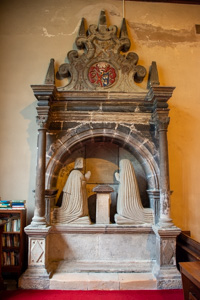
St Oswald, Oswestry - Memorial
1215 AD
The Fourth Lateran Council (1215) was a landmark 13th-century council convoked by Pope Innocent III in Rome to reform the Church, combat heresy, and launch a new crusade. It solidified major doctrines like transubstantiation, mandated annual confession and communion for laity, and established restrictive policies for Jews and Muslims, including distinctive clothing, aiming to separate them from Christian society. Considered the 12th ecumenical council by the Catholic Church, it was one of the largest and most influential, with hundreds of bishops and representatives attending.
Reference: Wikipedia - Fourth Lateran Council
Aumbrey
For those Christian traditions which practice the rite known as Eucharist or Holy Communion, a tabernacle or sacrament house is a fixed, locked box in which the Eucharist (consecrated communion hosts) is stored as part of the “reserved sacrament” rite. A container for the same purpose, which is set directly into a wall, is called an aumbrey.
An aumbry (or aumbrey, from the Latin armarium), is a recessed, locked cupboard built into the wall of a church, historically used for the secure storage of sacred items, including chalices, altar vessels, and the oils for sacraments. In English churches, its use evolved from a general storage space in the Middle Ages to a specific place for reservation of the Blessed Sacrament, particularly in the post-Reformation era. In 1215, the Fourth Lateran Council decreed that the reserved sacrament be kept in a locked receptacle, increasing the use of secure, built-in aumbries.
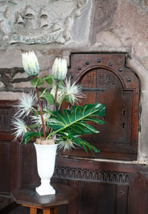
St George, Pontesbury - Aumbrey
1215 AD: Magna Carta
In 1215 the Magna Carta is sealed by King John, and then is declared null and void by Pope Innocent III - the king had sealed the charter under duress from a group of rebel barons and believed that seeking a papal annulment would free him from its obligations.

(early) 13th Century AD: Candles on the Altar
Pope Innocent III (reigned 1198–1216) is historically recognized as the first Pope to explicitly order or sanction the placing of lights (candles) directly upon the altar.
Candles (and previously oil lamps and torches) have always been present in churches, initially for practical lighting purposes, and then by the Middle Ages the use of candles became increasingly symbolic.
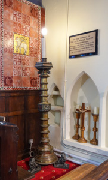
St Chad, Norton-in-Hales - Candlesticks
(circa) 1230 AD: Alberbury Priory Re-established
Alberbury Priory is re-established. It was one of three houses in England belonging to the French Grandmontine Order.
1236 AD: Lockable Lids on Fonts
In 1236, a decree was issued by Edmund, Archbishop of Canterbury, ordering that all church fonts (used for baptism) must have a lockable lid. The lock was to prevent the theft of Holy Water, which was believed to have magical properties. It was common for the water to be changed only once a year on Easter Sunday. This requirement often led to the creation of elaborate, artistic, and secured wooden covers for stone fonts, with many original, locked fonts still in existence in English churches.
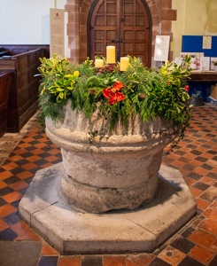
St Andrew, Wroxeter - Font
Font
Every medieval church contained a font. It was close to the main entrance of the church in an area known as the baptistry. The font is placed by the entrance as it symbolises the start of a new life as a Christian. Baptism represents leaving behind the past and committing to God for the future. Today, fonts may be found elsewhere in the church.
The word font is derived from the Latin word 'fons' which means spring.
The font contains the holy water used in Baptism. They were originally large enough to allow the infant to be fully immersed, but in the middle ages it became the practice to baptise by partial immersion or pouring water over the head.
In Shropshire there are circa 100 medieval fonts, with a little over half being Norman.
Parish
The word "parish" originates from the Greek word paroikia, meaning "sojourning in a foreign land" or "dwelling beside". It passed into Latin as paroecia and Old French as paroisse before appearing in English around the 13th Century to describe a local church community and its territory.
1270 AD: Bell cast for Astley
Astley church is notable as it has a bell dating from 1270, which is thought to have been cast in the churchyard by a travelling founder. The bell was rehung in 2012 after being restored. It is thought to be one of, if not the, oldest bells in the county and the diocese (Lichfield).
Reference: Dove’s Guide for Church Bell Ringers

St Mary, Astley
Piscina
The Latin word 'piscina' literally means fish pond.
The piscina is a niche containing a shallow stone basin with a drain hole. It was used for disposing of the holy water used to wash the communion vessels during the service. A double piscina also has a bowl for the priest to wash his hands. No piscinas known in England are earlier than the middle of the 12th century. They are almost always located on the south side of the altar in the chancel.
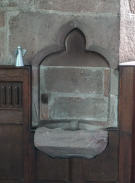
St George, Pontesbury - Piscina
Ninth Crusade
The Ninth Crusade (1271–1272): This was led by the future Edward I of England and was the last of the major Crusades to the Holy Land. Edward clashed with the Mamluk sultan Baibars but was ultimately forced to withdraw due to pressing domestic issues.
1290 AD (18th July): Edict of Expulsion
On July 18, 1290, King Edward I issued the Edict of Expulsion, forcing the entire Jewish community (approximately 3,000 people) to leave England by November 1st. Driven by rising anti-Semitism, financial motives, and the need to secure parliamentary taxes, this decree banned Jews from the kingdom for over 365 years.
(late) 13th Century AD: Wooden Effigy
Some of the earliest effigies on tombs were carved of oak, there are four examples in Shropshire (out of circa 100 in the country) - Berrington (circa 1285), Pitchford (late 13th Century), Eaton-under-Heywood and Burford.
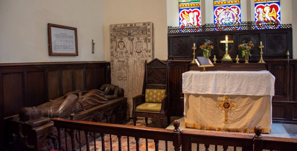
St Michael and All Angels, Pitchford - Oak Effigy
(circa) 1300 AD: Mappa Mundi
The Mappa Mundi is created, it is the largest medieval map depicting the world still known to exist. The map is religious rather than a literal depiction, it features heaven, hell and the path to salvation. Titterstone Clee is the only named hill on the map.
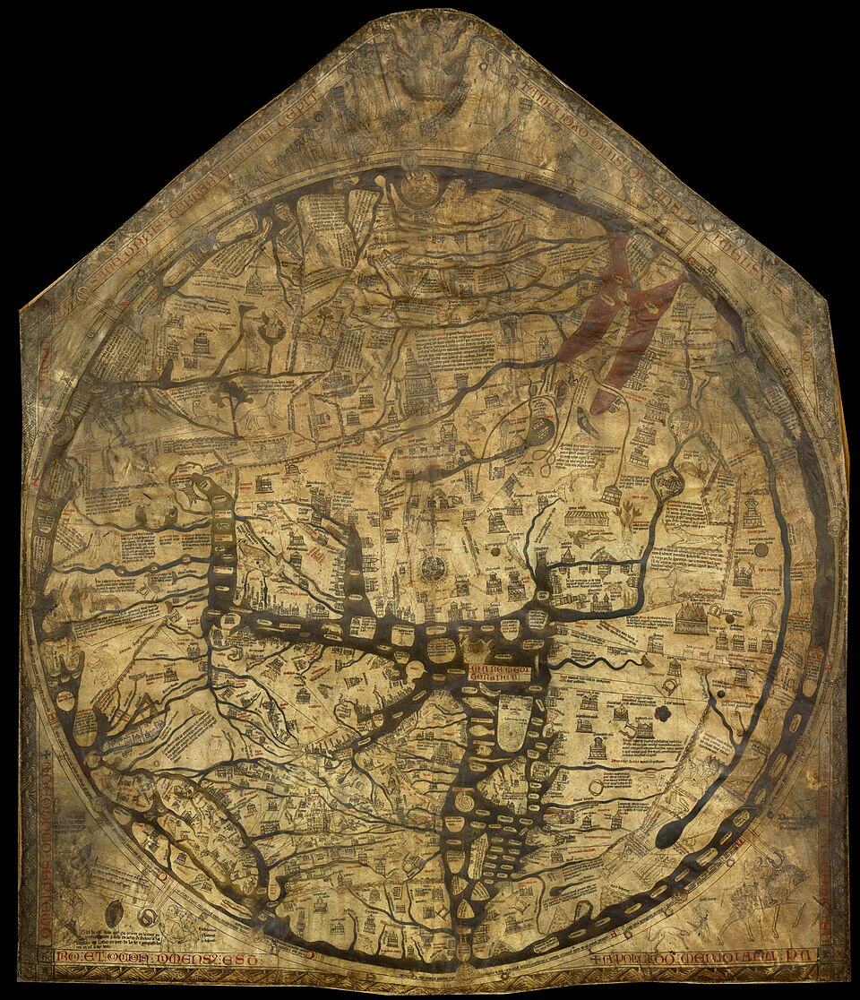
Church Building - Decorated (c. 1300 - 1350)
The second style of English Gothic architecture is generally termed Decorated Gothic, because the amount of ornament and decoration increased dramatically. It was a period of growing prosperity in England, and this was expressed in the decoration of Gothic buildings. Almost every feature of the interiors and facades was decorated.
Lierne Vaulting (14) became much more elaborate in this period. The rib vault of Early English usually had just four compartments, with a minimum number of ribs which were all connected to the columns below, and all played a role in distributing the weight and outwards and downwards. In the Decorated architecture period, additional ribs were added to the vaulted ceilings which were purely decorative. They created very elaborate star patterns and other geometric designs. An even more elaborate form - fan vaulting, appeared late in the Decorative period, unlike the lierne vault, the fan vault had no functional ribs; the visible 'ribs' are mouldings on the masonry imitating ribs. The structure is instead composed of slabs of stone joined together into half-cones.
The buttress became more common in this period, also; these are the stone columns outside the walls which supports them, allowing thinner and higher walls between the buttresses, and larger windows. The buttresses were often topped by ornamental stone pinnacles to give them greater weight.
However, Decorated architecture is particularly characterised by the elaborate tracery within the stained glass windows. The elaborate windows are subdivided by closely spaced parallel mullions (vertical bars of stone), usually up to the level at which the arched top of the window begins. The mullions then branch out and cross, intersecting to fill the top part of the window with a mesh of elaborate patterns called tracery, typically including trefoils and quatrefoils. The style was geometrical at first and curvilinear, or curving and serpentine, in the later period, this curvilinear element was introduced in the first quarter of the 14th century and lasted about fifty years.
There are relatively few Decorated or Perpendicular churches in Shropshire, as the pace of building churches slowed down during the 14th and 15th Centuries. However, many existing churches were extended during this time, in particular, many towers were are added or made taller. The nave and chancel at St Peter, Chelmarsh, are Decorated.
14: A lierne is a tertiary rib connecting one rib to another, as opposed to connecting to a springer, or to the central boss. The resulting construction is called a lierne vault or stellar vault (named after the star shape generated by connecting liernes). The term lierne comes from the French lier (to bind).

St Peter, Chelmarsh
Easter Sepulchre
Easter is the most important festival of the Christian year. An Easter sepulchre is an arched recess, usually in the north wall of the sanctuary. It is used during the annual Easter ceremonies as it is symbolic of Jesus’ burial in the tomb following the crucifixion.
A crucifix and other sacred elements were placed in the sepulchre from Good Friday until Easter Day. The sepulchre was generally set into the north wall of the chancel. Such sepulchres often resemble canopied tombs, with elaborate carved frontals and highly decorative canopies. Easter Sepulchres are found only in England, and generally date from the Decorated Gothic period, roughly 13th and 14th centuries.
Easter Sepulchres are relatively rare, as most were destroyed during the Reformation. In some cases elaborate tombs are identified as possible sepulchres but such identification is impossible to verify, especially in cases where the carving is worn or partially destroyed.
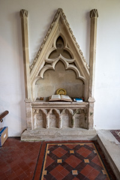
St Mary, Billingsley - Easter Sepulchre (the only church in Shropshire with this feature)
Hundred Years’ War
1337-1453
Black Death
June 1348 the Black Death reaches England. The church itself had given the cause of the Black Death to be the impropriety of the behaviour of men, the higher death rate among the clergy led the people to lose faith in the Church as an institution - it had proved as ineffectual against the horror of Y. pestis as every other medieval institution. The corruption within the Catholic priesthood also angered the English people. Many priests abandoned the terrified people. Others sought benefits from the rich families who needed burials. The dissatisfaction led to anti-clericalism and the rise of John Wycliffe, an English priest. His ideas paved a path for the Christian reformation in England.
Church Building - Perpendicular (1350-1550)
The Perpendicular style emerged in the mid-14th Century, it is characterised by an emphasis on vertical lines. The intricate shapes of the Decorated style gave way to more regular and rectangular shapes.
Walls were built much higher than in earlier periods. Windows became very large, sometimes of immense size, with slimmer stone mullions than in earlier periods, allowing greater scope for stained glass craftsmen. The mullions of the windows are carried vertically up into the arch moulding of the windows, and the upper portion is subdivided by additional mullions (supermullions) and transoms (15), forming rectangular compartments, known as panel tracery.
The interiors of Perpendicular churches were filled with lavish ornamental woodwork, including misericords, under which were grotesque carvings; stylized 'poppy heads'; and elaborate multicoloured decoration, usually in floral patterns, on panels or cornices (brattishing (16)). Tracery designs were replaced by more geometric forms and perpendicular lines.
The Black Death affected the Perpendicular style as arts and culture, took a more sober direction.
Towers were an important feature of the Perpendicular style, though fewer spires were built than in earlier periods. Decorative Battlements were a popular decoration of towers in smaller churches.
Doorways were frequently enclosed within a square head over the arch mouldings, the spandrels being filled with quatrefoils or tracery. Pointed arches were still used throughout the period, but ogee (17) and four-centred Tudor arches (18) were also introduced.
Inside the church the triforium disappeared, or its place was filled with panelling, and greater importance was given to the clerestory windows, which often were the finest features in the churches of this period. The mouldings were flatter than those of the earlier periods, and one of the chief characteristics is the introduction of large elliptical hollows.
In Shropshire in the 14th Century there were very few new churches, the implication being that Shropshire remained relatively poor with a static population and so there was no need for any new churches. The two notable churches built during this time in the Perpendicular style are St Laurence, Ludlow (funded by the Palmers' Guild, superficially the church is Perpendicular, but there are significant Decorated elements) and St Peter, Edgmond (the chancel is Decorated and the tower, porch, nave and aisles are Perpendicular).
15: A transom is a transverse horizontal structural beam or bar, or a crosspiece separating a door from a window above it. This contrasts with a mullion, a vertical structural member.
16: Brattishing or brandishing is a decorative cresting which is found at the top of a cornice or screen, panel or parapet. The design often includes leaves or flowers, and the term is particularly associated with Tudor architecture.
17: An ogee is the name given to objects, elements, and curves that have been variously described as serpentine, extended S or sigmoid-shaped. Ogees consist of a 'double curve', and are the combination of two semicircular curves or arcs that, as a result of a point of inflection move from concave to convex or vice versa, the ends of the overall curve point in opposite directions (and have tangents that are approximately parallel).
18: A Tudor arch is a four-centered arch which is a low, wide type of arch with a pointed apex. Its structure is achieved by drafting two arcs which rise steeply from each springing point on a small radius, and then turning into two arches with a wide radius and much lower springing point.
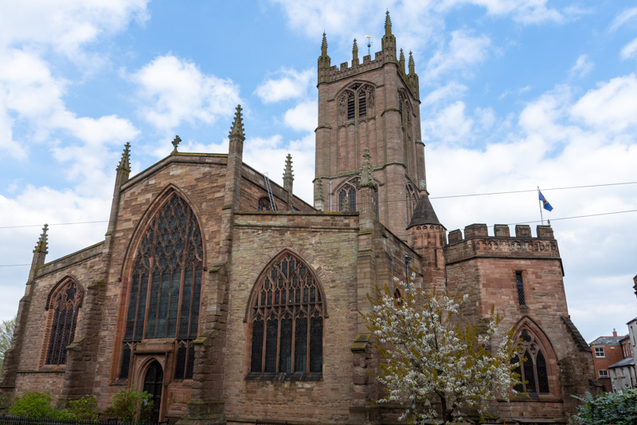
St Laurence, Ludlow
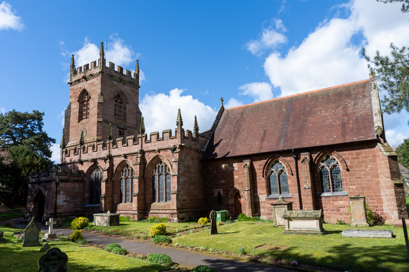
St Peter, Edgmond
14th Century AD: Jesse Window
The oldest stained glass in Shrewsbury, the Jesse Window at St Mary's was made for Greyfriars chapel in the 14th Century. Following the dissolution of the friary in 1538, the window was moved to St Chad's, before being brought to St Mary's in 1791.

St Mary, Shrewsbury - Jesse Window
Jesse Window
A Jesse window is a type of stained-glass window, common in medieval churches, that illustrates the "Tree of Jesse," a genealogical family tree tracing Jesus Christ’s ancestry from Jesse, the father of King David. Based on the prophecy in Isaiah 11:1, these windows typically depict a sleeping Jesse at the bottom, with branches growing upward to show kings, prophets, and culminating in the Virgin Mary and the Christ child.
(circa) 1340 AD
The effigy of the knight at Leighton is thought to date from circa 1340 and was apparently brought from Buildwas Abbey after the Dissolution - traces of colour remain, especially on the shield which displays the Leighton arms - it is considered one the finest monuments in the county, and is one the earliest stone effigys.
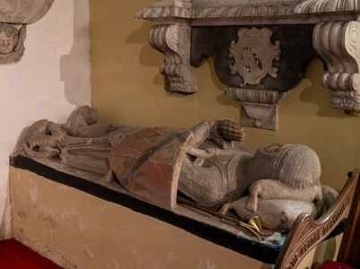
St Mary, Leighton - Knight Effigy
1342 AD: Westbury Roof
Westbury church is noted for its roof structure in the aisle and nave, said to be the oldest roof of its type in the country, dendrochronology dates the timbers to 1342. It is the trussed rafters and the collar-beams on the arched braces that make this roof special. A grant from English Heritage has paid for substantial repairs.
The roof of a church, particularly when featuring exposed, vaulted wooden beams, is intentionally designed to symbolize the inverted keel of a ship. This architectural feature, combined with the central seating area known as the "nave" (derived from the Latin navis, meaning ship), represents the Church as a vessel of salvation carrying the faithful through the storms of life to a safe harbour.
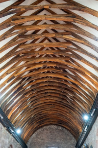
St Mary, Westbury - Roof
Church Ceilings
Church ceilings take many forms, for example Baroque painted ceiling by Cheshire artist Thomas Francis (1672) at Bromfield.
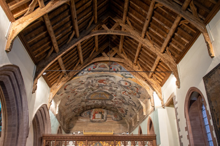
St Mary the Virgin, Bromfield - Ceiling
Roof Boss
A boss is a decoration in stone or wood where cross members of a roof or ceiling intersect. Many are elaborately carved, and popular subjects include grotesque and human faces, green men, symbols of Christ’s passion, heraldic shields, foliage and animals. For most of them, the original paintwork has long since gone, to be replaced in some cases by a covering of gilt paint.
1370 AD: Brass Memorials
Monumental brasses evolved in the 13th Century, the oldest in Shropshire is dated 1370 at Burford.
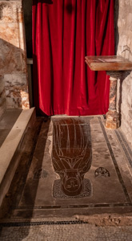
St Mary, Burford - Brass Memorial
1382 AD: Wycliffe Bible
Wycliffe Bible published.
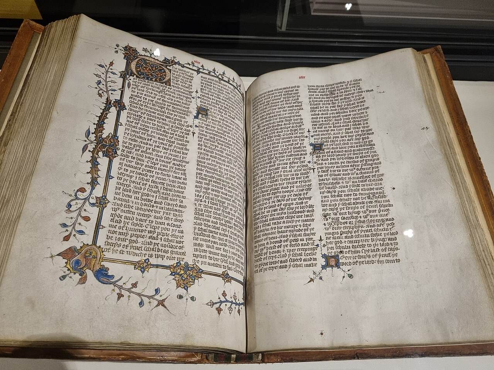
Reference: Wikipedia - Wycliffe Bible
1388 AD: Palmers' Guild of Ludlow
It was said in 1388 that this guild had been founded in 1284 by a group of Ludlow burgesses, who assigned rent-charges on their property to endow three guild chaplains, severally to pray daily for the living, for the dead, and in honour of the Cross.
References:
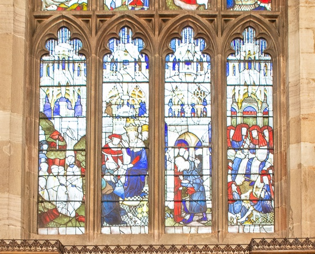
St Laurence, Ludlow - Palmers Window
1392 AD: Statute of Praemunire
The Statute of Praemunire is enacted during the reign of Richard II, its purpose was to limit the powers of the papacy in England by making it illegal to appeal an English court case to the pope if the king objected, or for anyone to act in a way that recognized papal authority over the authority of the king.
Reference: Wikipedia - Statute of Praemunire
1401 AD: Melveley Church
There was a 12th Century wooden church at Melveley, however this was burnt down by Owain Glyndwr (Wikipedia) in 1401. The present church was built in 1406 and is a rare example of a half-timbered church (and all of the timbers are pegged).

St Peter, Melveley
Patron Saint of England
St. George (died c. 303) was a Roman soldier of Greek origin from Cappadocia (modern Turkey) who became a Christian martyr after refusing to renounce his faith during Diocletian's persecution. While the "dragon" legend was added in the Middle Ages, he became the patron saint of England in 1415.

St Catherine, Eaton-under-Heywood - Window showing St George
Battle of Shrewsbury
21st July 1403
(early) 15th Century AD: Battlefield Church
Battlefield Church was built on the site of the Battle of Shrewsbury.
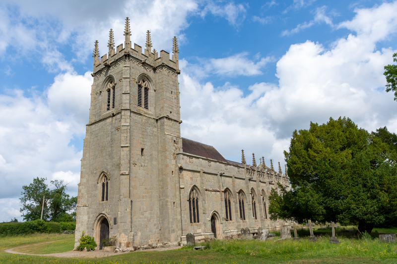
St Mary Magdalene, Battlefield
1441 AD: Alberbury Priory Dissolved
Alberbury Priory was dissolved in 1441 when King Henry VI, who had seized the alien houses during the Hundred Years War, gave it as an endowment to All Souls' College, Oxford.
Wars of the Roses
1455-1487
Printing Press
In 1476 William Caxton sets up the first printing press in England.